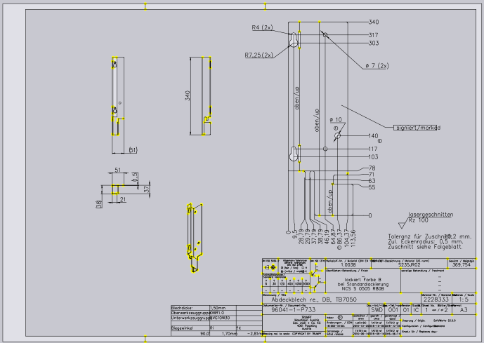
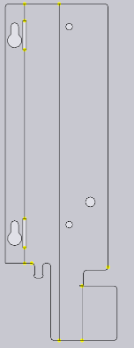
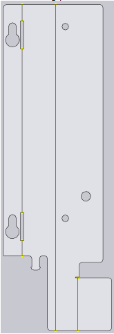
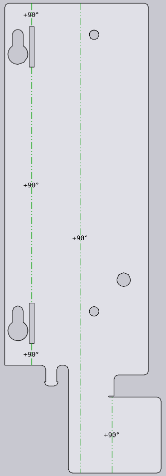
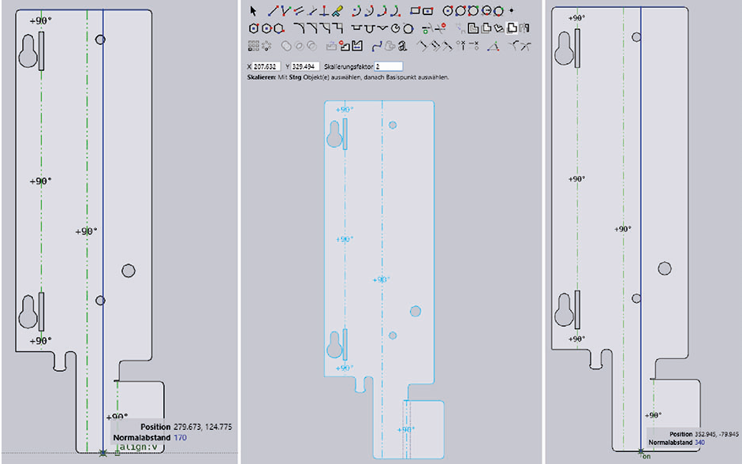

Preparing a 2D drawing
See also Tutorial Importing 2D geometry with bend lines.
-
Open a DXF or DWG

-
Remove excess objects, texts, dimensions, etc.

-
Possibly draw line segment.
-
If bending part is not recognized (sheet is shown light-grey), then export the file as

-
Convert existing lines or newly drawn lines at the required places in the bending lines.


-
Measure and check side lengths. If necessary, change processing strategy and adapted outer dimension.
-
Create bending solution.
-
Select Workflow using the icon and click the 2D part or use shortcut key 2.
-
The system switches back to 2D view.
-
-
If necessary, measure and check side lengths again.